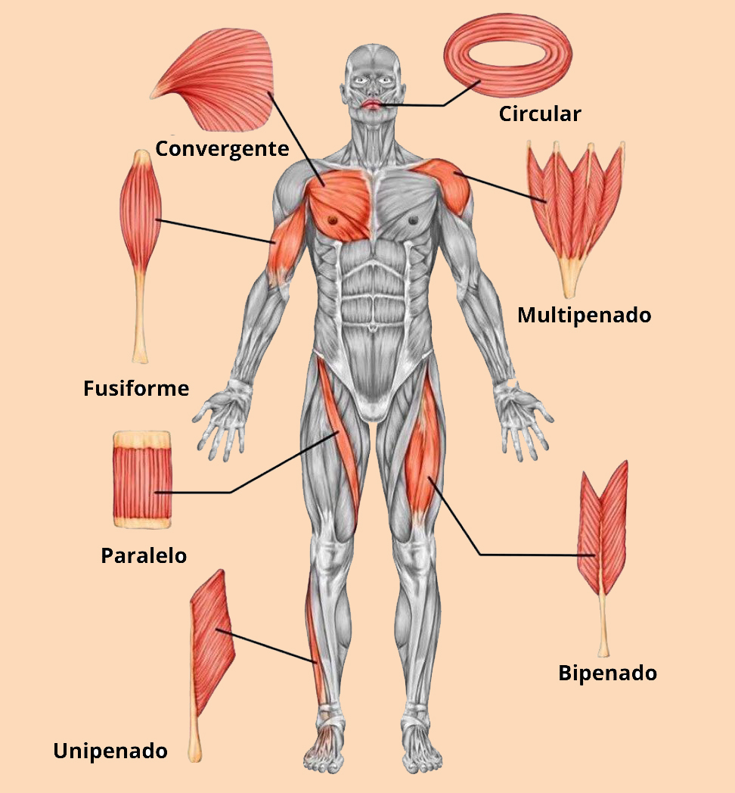

Los músculos en el cuerpo humano exhiben una variabilidad en cuanto a su forma y tamaño, lo cual es fundamental para su función específica y ubicación en el organismo. A continuación, se presentan algunas de las más comunes:
- Músculos fusiformes: Estos músculos tienen una forma alargada y cilíndrica. Son típicamente más delgados en el centro y se ensanchan en los extremos. Un ejemplo clásico de músculo fusiforme es el bíceps braquial en el brazo.
- Músculos penniformes: Los músculos penniformes tienen fibras musculares que se asemejan a las hojas de una pluma o a una estructura de plumas. Estos músculos pueden ser "unipennados", donde las fibras se unen a un solo tendón central, o "bipennados", donde las fibras se unen a ambos lados de un tendón central. Un ejemplo de músculo unipennado incluyen el extensor largo de los dedos, mientras que el músculo recto femoral es un ejemplo de músculo bipennado.
- Músculos planos: Los músculos planos son delgados y aplanados, con fibras musculares dispuestas en una superficie plana. Estos músculos suelen cubrir áreas extensas del cuerpo y son importantes para la protección de órganos. Un ejemplo destacado es el músculo recto del abdomen.
- Músculos circulares: Estos músculos tienen una forma circular y rodean aberturas del cuerpo, como el esfínter anal o el esfínter esofágico inferior. Su contracción cierra estas aberturas.
- Músculos mixtos: Algunos músculos pueden combinar varias formas en su estructura. Por ejemplo, el músculo deltoides en el hombro tiene un aspecto triangular con múltiples cabezas, lo que le permite realizar una variedad de movimientos.
- Músculos irregulares: Algunos músculos no encajan fácilmente en ninguna de las categorías anteriores debido a su forma única. Estos músculos desempeñan funciones especializadas en el cuerpo. Un ejemplo es el músculo orbicular de los ojos, que rodea el ojo y permite el cierre y la apertura de los párpados.
La forma de los músculos está directamente relacionada con su función. Los músculos fusiformes suelen ser buenos para la generación de velocidad y movimiento, mientras que los músculos penniformes tienen una ventaja en términos de fuerza. Los músculos planos pueden proporcionar protección y soporte, mientras que los músculos circulares permiten el control de aperturas y cierres.

{kind=link}